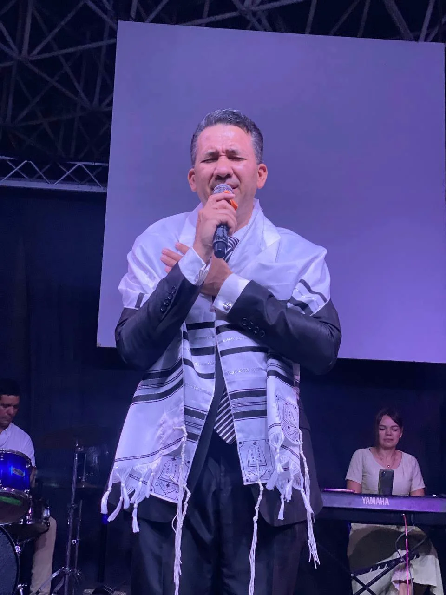
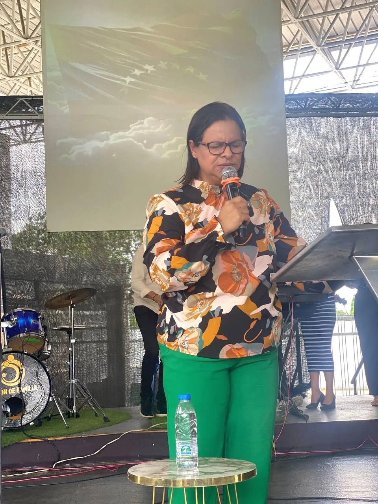

Conoce Nuestro Ministerio
VISIÓN DE FAMILIA
Nuestro Ministerio
El Ministerio Apostólico y Profético Visión de Familia fue fundado el 14 de marzo de 2020,
en un momento crítico de la historia mundial.
La pandemia de COVID-19 trajo consigo desafíos sin precedentes,
pero también despertó un profundo anhelo de esperanza y conexión espiritual en muchas comunidades.
En este contexto, un matrimonio apasionado por Dios y por las almas decidió dar un paso de fe,
creando un espacio donde las personas pudieran encontrar consuelo, libertad y restauración en medio de la
adversidad.
Desde su inicio, la visión ha sido clara: preparar en el conocimiento de la verdad a hombres y mujeres en el
área de la intercesión,
liberación, restauración y adoración. Este propósito se basa en la creencia de que cada individuo tiene el
potencial de renacer y transformarse a través del amor y la gracia de Dios.
FUNDAMENTOS
Liberación
Juan 8:36Restauración
Eclesiastés 3:15Intercesión
1 Tesalonisenses 1:2Adoración
Juan 4:23-24Misión
Facilitar al creyente el descubrimiento, desarrollo y fortalecimiento de sus dones y talentos en Dios, con el propósito de alcanzar la plenitud del hombre perfecto y contribuir a la edificación de la iglesia de Jesucristo.
Visión
Que cada persona ganada para el reino de Dios no solo reconozca su amor,
sino que también aprenda a cultivar una relación profunda con Él.
Anhelamos que cada individuo se comprometa a vivir conforme a Su Palabra,
reflejando así Su gloria en todas sus acciones y decisiones.
Fundadores
Apóstol Juan Mata
El Apóstol Juan Carlo Mata nació el 28 de mayo de 1975, y desde una edad temprana mostró un profundo interés por el conocimiento y el servicio a los demás. Se graduó como Licenciado en Administración y Licenciado en Contaduría Pública, lo que le permitió desarrollar habilidades sólidas en el ámbito empresarial y financiero. Además, obtuvo un postgrado en Gerencia Empresarial y una Maestría en Docencia Universitaria, consolidando su compromiso con la educación y el desarrollo profesional.
"Servir es el camino al liderazgo eterno"
Profeta Yenny de Mata
La Profeta Yenny de Mata, nacida el 1 de enero de 1980, es una sierva de Dios apasionada y ungida, cuyo ministerio ha impactado vidas por toda la nación y más allá. Antes de abrazar plenamente su vocación ministerial, la Profeta Yenny se graduó como Licenciada en Contaduría Pública. Esta formación profesional le brindó una base sólida en principios de organización y administración, habilidades que hoy en día son de gran valor en la edificación del cuerpo de Cristo.
"Con fe y obediencia, el propósito se manifiesta"
EQUIPO PASTORAL
Pastores Antonio y Romelia De Colmenares
Danza
Escuela de la Visión
Pastores Carlos y Jessica De Aranguren
Operaciones
Adoración
Amor y Misericordia
Pastores Enrique y Yoleima De Ortiz
Registro y Seguimiento
Intercesión
Pastores Israel y Cleorelys De Laborda
VDF Kids
Líderes Visionarios
Pastores Samuel y Yennifer De Pérez
Protocolo
Diseño y Ambiente
UMAV